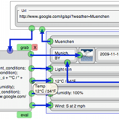
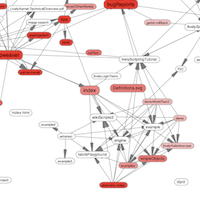
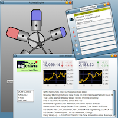
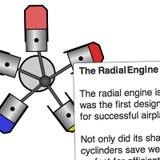

|  |
Lively Fabrik Lively Fabrik is a Web-based general-purpose end-user programming environment. It extends the ideas of the original Fabrik system by empowering end-users to create interactive Web content entirely within their Web browsers. Web applications created with Lively Fabrik typically combine Web sources, data manipulation, and interactive user interface elements. The result can be a Mashup, but due to the powerful underlaying system, any general-purpose application. (lively) |
|  |
Lively Wiki Lively Wiki enables users to create rich and interactive Web pages and applications – without leaving the Web. Lively Wiki combines the wiki metaphor with a direct-manipulation user interface and adds a concept for Web programming as well as programming tool support to create an easy to use, scalable, and extendable Web authoring tool. Moreover, Lively Wiki is self-supporting, i.e. the development tools were used for creating its own implementation thereby giving users the freedom to customize every aspect of the system. (lively slides, lively) |
|  |
Examples The standard Lively Kernel examples, ranging from stock- and weather widgets, to developments tools, and an astroid game. (lively) |
|  |
Engine Example Active example with text that describes the Radial Engine with a customizable simulation. (lively) |
The Lively Kernel is intended to run in every commercial web browser client with no plug-ins or installation whatsoever. However, because of differences in the underlying graphics and other capabilities of various web browsers, we only support a limited set of browsers and browser versions. We have tested our system on Windows XP and MacOS using the following browsers:
The browsers above provide support for Scalable Vector Graphics ( SVG), a graphics library that we use as the underlying low level graphics interface. The SVG interfaces are hidden from the application developer, but our implementation requires an SVG-compatible graphics engine.
© 2006-2010 HPI Software Architecture Group